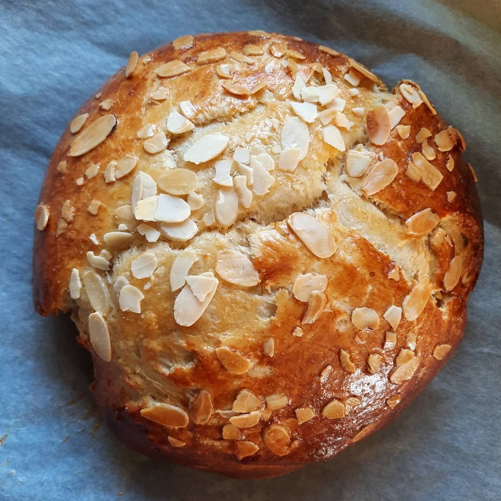

Biskupský chlebíček podľa @ewika.s — Normy Jedál
Patří neodmyslitelně ke svátkům jara. Někdo ho má rád s rozinkami někdo ne...mazanec je prostě tradice 😉 a tenhle je navíc ze špaldové mouky. Tak zas příští rok.
Ingredience:
350 g špaldové hladké mouka
2 ks vajec
50 g třtinového cukru
20 g čerstvého droždí
90 g rozpuštěného másla
100 ml vážného mléka
citronová kůra
Postup:
Do hrníčku nebo misky rozdrobíme droždí, přidáme vlažné mleko, lžíci cukru z odváženého množství, rozmícháme a necháme 15 minut na teplém místě.
Mezitím si do misí odvážíme mouku, doprostřed uděláme důlek, do kterého vyklepneme vejce, rozpuštěné máslo, cukr a citronovou kůru.
Přidáme kvásek a začneme hníst. Těsto by mělo být pružné a nelepivé. Dobře zpracované těsto přikryjeme utěrkou a necháme kynout 45 minut na teplém místě.
Po vykynutí vytvarujeme bochánek, který necháme kynout pod utěrkou ještě dalších cca 20 minut.
Troubu rozehřejeme na 170°C, mazanec potřeme vejcem, posypeme mandlemi a pečeme cca 30 minut.
Pekla jsem na horkovzduch, během pečení můžete ještě potřit vejcem a pokud praskne, tak nevadí, stejně se sní 🤣
#velikonoce #mazanec #dnespecu #mojepeceni #kynute #dnespecu #rodina #vareniprorodinu #biskupskychlebicek #kynutetesto #easter #spring #mycooking #gastroporno #yumiyumi #yumi #cooking #recepty #lyoovoce #lyofilizovaneovoce #velikonocevlockdownu #velikonocevkarantene #pecenijeradost #velikonocnipeceni #sladkepecivo #breakfest #mandle #tradice #nakazdemstole #czechfood #czechcake